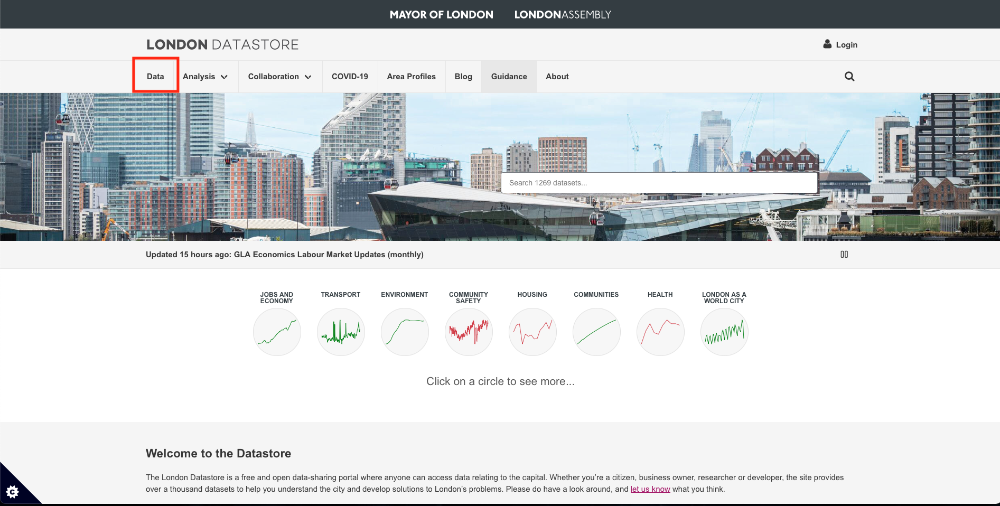
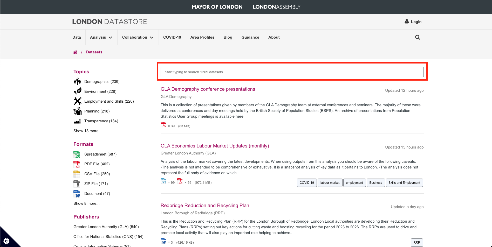
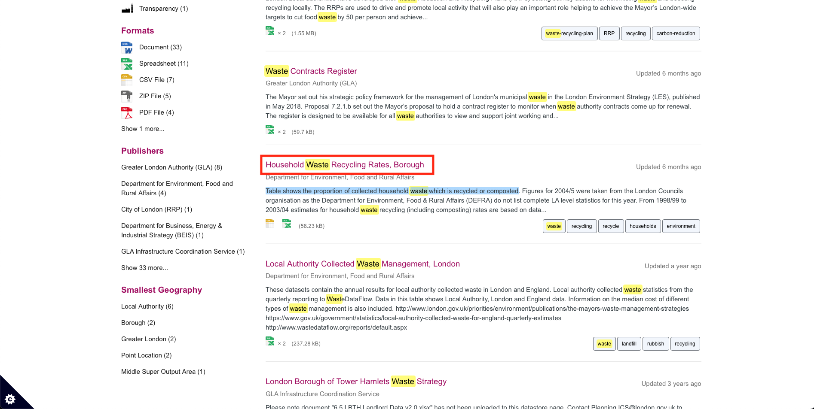

Week 6: Sourcing Data I
1 Sourcing, Preparing & Analysing Open Data
In many real-world research projects (including environmental epidemiology, quantitative criminology, or disaster risk reduction sciences), you will not start with a clean ready-to-use dataset. Instead, you will need to locate, download, inspect, clean, and then analyse the data particularly if your project is full-on quantitative or mixed methods. This tutorial uses waste related data from the London DATASTORE as working example to show you the typical workflow from sourcing, preparing and analysis open datasets.
1.1 Learning outcomes
By the end of this tutorial, students will be able to:
- Taking advantage of open-data sources.
- How to perform a download (directly from website) and import the raw data into R using base functions i.e.,
download.file()utilising the data’s Uniform Resource Locator (URL). - Show one instance of doing a descriptive analysis on groups using the
tapply()function.
Warning
Instructions
This time around, no datasets are shared as we are going to download them in a streamlined way through RStudio as a demonstration. Therefore, in your computer, do the following:
- Go to the folder named GEOG0186.
- Next, create a new sub-folder within GEOG0186 and rename it as Week 6.
1.2 What is the London DATASTORE (Length: 00:28:41)
The London DATASTORE is an open data-sharing platform created and maintained by the Greater London Authority (GLA) to make data about London freely available to everyone — researchers, policymakers, journalists, businesses, and the public. This initiative was launched somewhere around 2010 as one of the first open data initiatives by a major city government to: 1.) promote transparency in how London is governed; 2.) encourage innovation by allowing developers and analysts to build tools and insights using public data; and 3.) support evidence-based policy and research on London’s economy, environment, transport, housing, health, and more.
The London Datastore hosts thousands of cleaned datasets from across London’s public sector, including:
- Demographics: population estimates, ethnicity, age structure, migration.
- Economy: employment, business activity, income, inflation.
- Environment: air quality, carbon emissions, green spaces.
- Housing: affordability, homelessness, planning permissions.
- Transport: cycling counts, traffic volumes, public transport usage.
- Health: life expectancy, hospital admissions, wellbeing indicators.
- Crime and Safety: police-recorded offences, fire brigade incidents.
Datasets come directly from the GLA, Transport for London (TfL), Metropolitan Police, NHS, ONS, and other partners.
We are going to download a series of datasets on waste related issues such as recycling, waste reuse centers and fly-tipping in order to establish a workflows.
So, let’s begin!
1.2.1 Preparing the path location
We start by setting the work directory to the appropriate folder location in our computer. In this step, we setting the directory to the folder called Week 6, so when we start the bulk downloads - the datasets are automatically sent to that folder and not in the Downloads location.
At this point, you should be familiar with setting up your working directory with the setwd() function.
For Windows:
setwd("C:/Users/accountName/Desktop/GEOG0186/Week 6")For Macs:
setwd("/Users/accountName/Desktop/GEOG0186/Week 6")1.2.2 Getting the URL for remote file downloads with RStudio
We are going to download the following datasets from the website:
- Household Waste Recycling Rates, Borough
- Waste Re-use Centres
- Fly-tipping Incidents
**Here are the steps for navigating through the webpage to these datasets:
On the home page CLICK HERE click on the [Data] tab at the top-left corner of the webpage.

This should show the list of all available datasets at our disposal that are freely available to download. Let search of the above datasets by typing in the word waste in the search bar:

It will produce a list of all waste-related datasets. The one, we are going for, is the dataset titled: [Household Waste Recycling Rates, Borough], which contains information proportion of household waste that are recycled or composted. Click on it.

It will show the META data behind this file. If you scroll down, you will see two versions of the file: 1.) An EXCEL (.xls) file; or 2.) A Comma Separated Value (.csv) file.
We want CSV (.csv) file. Now, you can straight-up download the file by simply clicking on the [Download] button… but we are going to do the downloads and coded fashion. What we are going to do is extract the URL (aka weblink) associated with the CSV dataset that we want to download.
We can do this by Right-clicking on the [Download] button for the CSV version, and then select [Copy Link] in the drop down menu - this copied piece of information is what we are going to feed into RStudio.

Now, let us go into RStudio!
1.2.3 Downloading file from the internet
The function download.file() can be used to download a single file as described by URL (i.e., the link of the dataset) from the internet and store it in destination set by our work directory. Please, the url which we hve copied must start with a scheme such as http://, https:// or file:// in order for it to work!
Let’s paste link and create it as an object:
# assign the link to a character object
URL_london_recycling <- "https://data.london.gov.uk/download/vd67o/15ddc38a-0a37-4f69-98b5-e69e549b39d3/Household-rcycling-borough.csv"We are going to use download.file() to download the dataset and save it with the file name London_households_recycling_borough.csv
# ask RStudio to download the CSV file to your working directory
download.file(URL_london_recycling,
destfile = "London_households_recycling_borough.csv",
mode = "wb")If you check in your work directory folder - you see that the dataset has been downloaded and automatically save there.

You can open the dataset and its all in order:
# use read.csv() function to open it
recycling_data <- read.csv("London_households_recycling_borough.csv")
# inspection of data
# show structure
str(recycling_data)'data.frame': 903 obs. of 4 variables:
$ Code : chr "E09000001" "E09000002" "E09000003" "E09000004" ...
$ Area : chr "City of London" "Barking and Dagenham" "Barnet" "Bexley" ...
$ Year : chr "2003/04" "2003/04" "2003/04" "2003/04" ...
$ Recycling_Rates: int 8 5 16 21 10 20 19 14 15 16 ...# show the header
head(recycling_data, n = 5) Code Area Year Recycling_Rates
1 E09000001 City of London 2003/04 8
2 E09000002 Barking and Dagenham 2003/04 5
3 E09000003 Barnet 2003/04 16
4 E09000004 Bexley 2003/04 21
5 E09000005 Brent 2003/04 101.2.4 Read-in data directly from URL
Suppose you want to download and open the dataset straight away in RStudio. That is a straightforward case — since the link of the file is a direct CSV download link, you can read it straight into RStudio in a single line of code using the read.csv().
# read directly from URL
recycling_data_2 <- read.csv("https://data.london.gov.uk/download/vd67o/15ddc38a-0a37-4f69-98b5-e69e549b39d3/Household-rcycling-borough.csv")
# inspection of data
# show structure
str(recycling_data_2)'data.frame': 903 obs. of 4 variables:
$ Code : chr "E09000001" "E09000002" "E09000003" "E09000004" ...
$ Area : chr "City of London" "Barking and Dagenham" "Barnet" "Bexley" ...
$ Year : chr "2003/04" "2003/04" "2003/04" "2003/04" ...
$ Recycling_Rates: int 8 5 16 21 10 20 19 14 15 16 ...# show the header
head(recycling_data_2) Code Area Year Recycling_Rates
1 E09000001 City of London 2003/04 8
2 E09000002 Barking and Dagenham 2003/04 5
3 E09000003 Barnet 2003/04 16
4 E09000004 Bexley 2003/04 21
5 E09000005 Brent 2003/04 10
6 E09000006 Bromley 2003/04 20We just simply inserted the link with CSV file name into read.csv() function.
1.3 tapply() for group analysis
tapply() stands for “table apply” — it lets you apply a function (like mean(), sum(), or length()) to subgroups of a vector, defined by one or more grouping factors. Meaning that, it let’s us calculate summaries by groups - for instance, we can calculate mean recycling rates by the Borough in London to see which one is doing well as a whole in terms of household waste management.
This calculation is simple:
avg_recycling_rates <- tapply(recycling_data$Recycling_Rates, recycling_data$Area, mean, na.rm = TRUE)
avg_recycling_rates Barking and Dagenham Barnet Bexley
24.28571 31.14286 47.09524
Brent Bromley Camden
30.71429 42.42857 28.00000
City of London Croydon Ealing
29.61905 33.90476 38.90476
East East Midlands Enfield
44.28571 41.23810 32.04762
England Greenwich Hackney
38.71429 31.95238 23.33333
Hammersmith and Fulham Haringey Harrow
24.42857 27.61905 37.66667
Havering Hillingdon Hounslow
30.47619 37.90476 30.04762
Islington Kensington and Chelsea Kingston upon Thames
27.14286 25.42857 40.47619
Lambeth Lewisham London
26.80952 19.71429 29.80952
Merton Newham North East
34.14286 16.76190 31.66667
North West Redbridge Richmond upon Thames
39.23810 25.47619 39.14286
South East South West Southwark
40.80952 43.66667 27.28571
Sutton Tower Hamlets Waltham Forest
37.85714 20.28571 29.28571
Wandsworth West Midlands Westminster
22.85714 36.66667 20.61905
Yorkshire and the Humber
37.19048 1.3.1 Exercise
- Have ago at using the
download.file()function for saving and importing the remaining two datasets in RStudio
- Waste Re-use Centres
- Fly-tipping Incidents
Important
HINTS
- Go to the website: London DATASTORE
- Navigate through the website. You can use the search bar search for the desired dataset.
- Remember to extract the URL link to dataset by right-clicking the [Download] button and selecting [Copy link]
- Use CSV version of the datasets.
- Use the
read.csv()to import the downloaded datasets into RStudio: 1.) name the fly-tipping records asflytipping_data; 2.) name the waste re-use centre records aswaste_reuse_data.